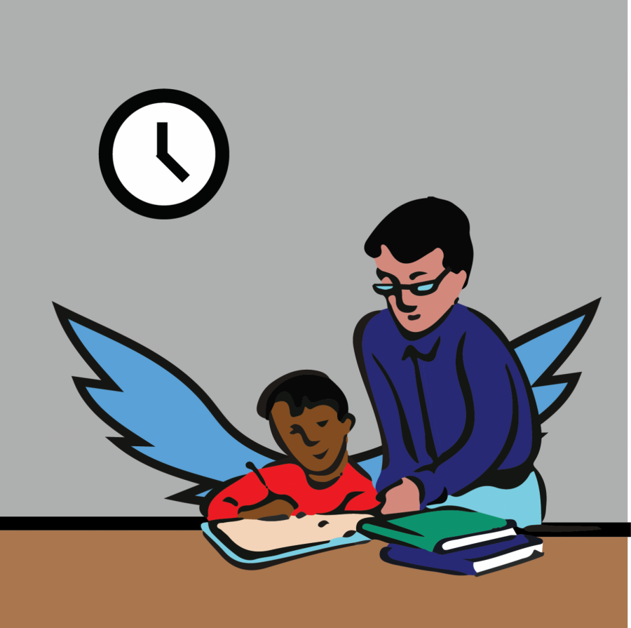
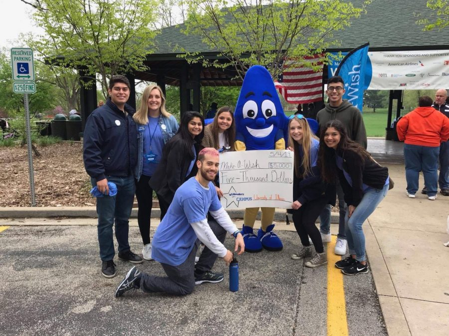
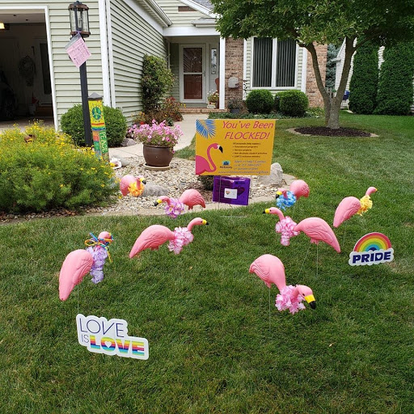
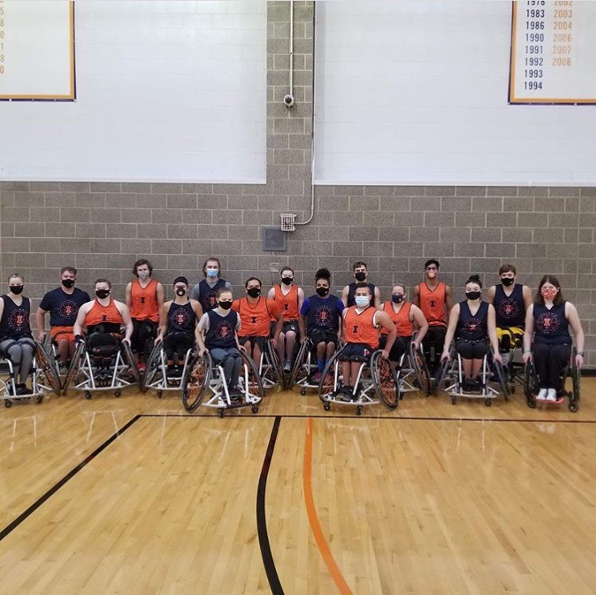

NANDIKA CHATTERJEE
Home
Journalistic Writing Samples
Public Relations Writing Samples
Specs Copy
Resume
Journalistic Writing Samples
Published by the Daily Illini, the independent student newspaper at the University of Illinois
Professor uses hip-hop to turn the tables on education
Kevin King, the saxophone king
The woman with her nose in a book shop
Film festival explores digital cinema communities
Webinar series battles ageism during Healthy Aging Month
University alumnae bring first dates on to comedy podcast
Student hits home run with analytics
SOAR provides tutoring for local children

Never too late: Author left promising career to write
Couples embrace cultural influence on Valentine’s Day celebrations
A man and his band
Latin American dance sessions go virtual
Tech conference, Reflections Projections goes virtual
Politics, pandemic move hand in hand
Wishmakers embrace empathy through charity

Geology professor inspires students with approach to science
Professor Gene Robinson studies the genes and social behavior of honey bees
Art exhibit empowers formally incarcerated voices
Concerns arise amid Omicron variant spike
Give voice to the arts: Matthew-Lee Erlbach
Flamingo Flocking Fundraiser celebrates September Pride

Cara Finnegan sees life in photographs
History majors remain rooted in the present
One Smart Diet device monitors health
Graduate students track turkey behavior
University alum, bestselling author Mikki Kendall discusses ‘Hood Feminism’ at The Literary
Humans of CU: An artists’ thank you
Grant revolutionizes wheelchair basketball program

COVID-19 Business Fellowship Program helps change lives
Resident advisers readjust to empty residence halls
Holi celebrates color, community
Harlem Globetrotters light up State Farm Center
Enactus project Circle Cycle clears bike clutter